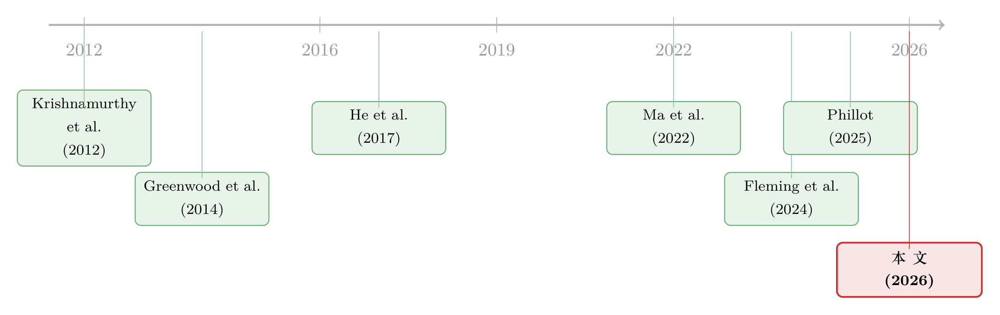

一张资产负债表，两个市场：当国债拍卖悄悄挤掉了 MBS 的做市能力
本文读的是 Yi Fan (2026, working paper)：当一级交易商（primary dealers）被迫吞下没人预料到的国债增发，他们那张被多个市场共用的资产负债表会被「占用」，于是同一批交易商在另一个市场——机构 MBS（agency MBS）——的做市与融资能力随之收缩。换句话说，国债供给冲击不止推动国债收益率，它还会顺着交易商的资产负债表「漏」到别的资产市场去。这是一篇仍在「Next Steps」阶段的工作论文，结论是新事实加一条待检验的传导链，而非干净的因果。
1 一个被忽略的「漏水点」
先从一个几乎所有人都同意、却又很少有人追问到底的事实说起。
财政部增发国债，国债收益率会动——这是教科书级别的结论，从偏好栖息地 (preferred habitat) 到供给冲击的高频识别，文献早已反复确认（Krishnamurthy et al. 2012；Greenwood et al. 2014）。可奇怪的是，最近的证据显示，国债供给冲击不只动国债：它还会推动股价、推动信用利差（Phillot 2025）。
这就有意思了。国债是国债，股票是股票，MBS 是 MBS，它们分属不同市场、不同投资者、不同的定价逻辑。为什么财政部多发一点国债，会让一个看似毫不相干的市场也跟着抖一下？
首先，一个偷懒的回答是「宏观情绪」——增发预示着财政、利率、风险偏好的某种变化，于是所有资产一起反应。但这个解释太滑了，什么都能套，等于什么都没解释。
接着，一个更结构化的问题浮现出来：到底是谁，在这中间充当了把冲击从一个市场搬到另一个市场的「搬运工」？ 本文的核心猜想，干净利落地落在一个对象上——
边际吸收者 (marginal absorber) 所面临的约束，决定了跨市场外溢的强弱。 谁接下了这笔国债、他的资产负债表有多紧，决定了冲击会不会、以及有多大程度地漏到别的市场。
而在美国国债市场里，这个边际吸收者有一个再清楚不过的名字：一级交易商。
2 两条传导渠道：到底是「容量」还是「需求」
把猜想说清楚，本文先区分了两条逻辑上都讲得通的跨资产传导渠道。
第一条，交易商资产负债表容量渠道 (dealer balance-sheet capacity channel)。 供给冲击被一级交易商吃下 → 占用了那张被多个资产类别共享的资产负债表 → 于是它给其他资产做市、融资的能力被挤压 → 别的市场的价格与流动性随之移动。这条渠道的关键词是「共享」：同一张表，同一组监管约束（杠杆率、风险资本），谁占多了，别人就少了。
第二条，需求替代渠道 (demand substitution channel)。 资产管理人为了匹配负债久期，会把债券和别的资产打包持有（Ma et al. 2022）。一个持续的供给冲击 → 资产端与负债端久期错配 → 投资组合再平衡 → 跨资产价格变动（需求曲线倾斜）。
这两条渠道并不互斥，但本文的重心明确押在第一条上。原因也很朴素：交易商的资产负债表是一个可观测、可计量、且被监管约束硬性卡住的东西，而「容量在不同市场之间被重新分配」这件事，恰恰是中介资产定价 (intermediary asset pricing) 理论最想看到、却一直缺乏高频证据的预测（He et al. 2017）。
关于「同一个中介、同一张资产负债表、把约束从一个市场带到另一个市场」这套逻辑，本博客此前评述过两篇思路相近的文章：《股票，真的是中介「无关」的资产吗？》 和 《无风险市场里的风险厌恶：是谁给做市商系上了「风险限额」这根绳》。本文做的，是把这根「绳」从单一市场拉到了跨市场。
3 实验室：为什么是国债拍卖
要检验「容量被占用」，你需要一个反复发生、外生、且高频的容量冲击。本文找到的实验室，是国债拍卖 (Treasury auctions)。
为什么是拍卖？因为它几乎是为这个问题量身定做的：日程是预先排定的，规模是高频的，而且——这点最妙——谁接的盘是可观测的。拍卖的中标者构成（一级交易商、投资基金、外国账户……）直接告诉你「边际吸收者是谁」。供给冲击本身可以用 Phillot (2025) 和 Ray et al. (2024) 的高频思路识别：在拍卖公告前后 30 分钟窗口里的国债期货价格变动，捕捉的是供给意外；在拍卖结果公布前后的二级市场收益率变动，捕捉的是需求意外。
于是研究问题被压缩成一句话：
当一级交易商吸收了未预期的国债增发，由此消耗的资产负债表容量，会不会外溢到他们同时做市的其他资产——具体说，机构 MBS——的定价与流动性上？
结果变量选 MBS，是个聪明的选择：MBS 和国债共享同一批一级交易商、同样的久期风险、同样的回购融资链条，却又是一个清清楚楚、自成一体的「别的市场」。
4 第一块拼图：交易商的资产负债表，已经「转不动」了
本文的实证骨架，建立在 Fleming et al. (2024) 那个经典的库存调整模型之上。它是一个一阶自回归 (AR(1)) 的库存调整设定：
这个方程里，真正承载故事的是 \(\beta_1\)。直觉是这样：如果交易商把库存当作一个临时的「仓库」——接了货就尽快分销出去、让库存回到目标水平——那么 \(\beta_1\) 应该显著为负，库存有很强的均值回归。Fleming et al. (2024) 在 1990–2020 的样本里估出的正是这样的结果：附息券库存的 \(\hat\beta_1 = -0.018^{***}\)。
但真正关键的一步在于：本文把样本换成更新的 FR2004A（2001–2026，周频），重估同一个方程，得到的 \(\hat\beta_1 = 0.007^{**}\)——符号反了，而且统计上无法拒绝单位根。
这意味着什么？意味着附息券库存几乎变成了一个随机游走：交易商接下的国债，不再像过去那样被迅速「冲销」掉，而是越来越像被长期囤积在表上。均值回归速度的排序也很说明问题：短期券 (Bills) > MBS > 附息券 (Coupons)——越是久期长、越占用资本的资产，越「转不动」。本文进一步指出，吸收者构成的变化（投资基金份额、外国份额上升）能解释一部分这种调整能力的弱化。
一句话：交易商的那张表，比十几年前「黏」得多了。这正是「容量被占用」故事能够成立的前提——如果库存来去自如，就不存在所谓的容量挤占。
5 反转：国债的「水」，确实漏到了 MBS
库存转不动只是前提。真正的反转，是去看这份被囤积的国债，有没有挤掉 MBS 的做市能力。
本文做了一个跨控制面板回归（Newey-West HAC，4 阶滞后，2001–2026），把 MBS 的库存变动 \(\Delta \text{Inv}_{\text{MBS}}\) 和净融资变动 \(\Delta \text{Net Fin}_{\text{MBS}}\) 放在左边，把国债净发行放在右边。结果是：
- 国债净发行，对 MBS 库存的系数是 $-0.007^{}\(，对 MBS 净融资的系数是 \)-0.024^{}$。增发国债，确实伴随着 MBS 库存与融资能力的收缩。
- 而「谁来吸收」起了决定性作用：当投资基金 (investment funds, IF) 在拍卖中拿走更大份额时，MBS 的容量受损更轻——附息券的 IF 份额每升高一点，对 MBS 净融资是 $+0.073^{}\(，对短期券是 IF 份额 \)+0.054^{}$ 进入 MBS 库存。换句话说，冲击落在交易商表上才漏、被基金接走就不漏。
这恰恰是「容量在市场间被重新分配」最直接的指纹。
接着，一个自然的问题是：方向对吗？会不会是 MBS 反过来影响国债？本文用格兰杰检验 (Granger causality) 给出了一条清晰的时间先后链条：
- 附息券库存 → 国债净融资：\(F = 10.59^{***}\)（Fleming 2024 是 $5.14^{}$，本文样本里更强），且是*单向的——反向不显著。
- MBS 库存 ↔ MBS 净融资：\(F = 3.75^{***}\)、$4.02^{}$，*双向。
- MBS → 国债（任何方向）：全部不显著，没有反馈。
把这些拼起来，本文给出一条「隐含的预测序列」：
$$\Delta\text{Coupon Inv} \;\Rightarrow\; \Delta\text{Net Fin Tsy} \;\Rightarrow\; \Delta\text{Inv MBS} \;\Leftrightarrow\; \Delta\text{Net Fin MBS}$$
国债在前，MBS 在后，且 MBS 不回头影响国债。当然，作者非常诚实地强调：格兰杰检验给的是时间上的先行性，不是因果；而且库存与融资之间的关联，有一部分本来就是会计恒等式的产物。
6 两个补充证据：囤积是「裸」的，而且工具能改写结论
到这里，故事的主线已经立住了。但有两块补充证据，让「容量被占用」从一个相关性叙事，向机制叙事更靠近了一步。
其一，拍卖周的库存动态彻底翻转了。 在 Fleming-Keane 的旧样本里，交易商是拍卖当周大量进货（同周 $+0.310^{}$）、随后几周分销（次周 $-0.047^{*}$）。本文的新样本里，这个模式反了过来：拍卖当周反而减少库存（$-0.020^{}$），到下一周才累积（$+0.070^{***}$）。这与「拍卖前做空、结算时点效应、或分销缓慢」一致，而与「当周即吸即分」的旧图景相悖——库存在表上停留得更久，正好呼应了第 4 节的均值回归弱化。
其二，这些被囤积的久期风险，基本上是「裸」的。 用 CFTC 的 TFF 数据（2013–2026），本文把交易商库存的久期风险（DV01）回归到期货头寸的久期上，系数是 $-0.398^{}$——平均下来，交易商只用期货对冲了约 *40% 的库存久期风险。而且 Fleming et al. (2024) 已指出，期货对冲主要针对「其他因素」驱动的库存，拍卖驱动的那部分库存对冲得更少。于是结论是：发行驱动的「仓储」带着没对冲掉的久期风险，抬高了在险价值 (Value-at-Risk, VaR)，吃掉了补充杠杆率 (Supplementary Leverage Ratio, SLR) 的容量。
这两点合起来，把「为什么国债库存会挤占 MBS」补上了机制：因为这些库存又黏、又裸、又吃资本。
最后，本文还顺手做了两个条件性检验，进一步指认是「容量」在起作用：
- 回购利率：国债回购对 FFR 的利差每升高 1%，附息券库存 $-4.39^{}$、国债净融资 $+10.35^{}$；而 MBS 端对 MBS 回购利率不敏感——融资成本的压力是从国债侧传过来的。
- 美联储持仓：美联储买国债，替代了交易商的吸收（\(\Delta\)Fed Tsy 持仓对附息券库存 $-0.072^{}\(）；美联储买 MBS，则直接缓解了 MBS 侧的资产负债表压力（\)+0.026^{}$）。也就是说，当那个「最终的资产负债表」（美联储）下场，挤占就消失了——这从反面印证了容量约束的存在。
7 文献脉络
把这篇论文放回它生长的脉络里，线索其实很清楚。
最早的一支，是国债供给如何定价：Krishnamurthy et al. (2012) 把国债的「便利收益」(convenience yield) 写进总需求，Greenwood et al. (2014) 则把债券供给和超额债券收益联系起来。这一支的底层理论是偏好栖息地——栖息地投资者只要特定期限的债券、不跨期限套利，而套利者（一级交易商）跨期限交易、却受单一资产负债表约束与风险厌恶 \(a\) 的限制（正文中提到的 VV 2021 久期风险渠道）。但这套经典框架有个硬限制：它只在债券市场内部运转。

第二支，是中介资产定价：He et al. (2017) 用一级交易商的资本比率定价了横跨多个资产类别的风险，确立了「中介的健康状况是一个共同定价因子」。Siriwardane et al. (2025) 的「分割套利」则进一步指出，套利资本在不同策略间并不自由流动。
第三支，是国债供给冲击的高频识别：Phillot (2025) 用拍卖事件干净地分离出供给冲击，并发现它会外溢到股票和信用；Ray et al. (2024) 用拍卖给量化宽松「拆包」。
本文站在这三支的交汇处：它借 Phillot (2025) 的高频拍卖识别，接 He et al. (2017) 的中介视角，把偏好栖息地里那个「单一资产负债表的套利者」自然延伸为「同时给多个市场做市、共用一张表」的交易商——一旦承认这张表是共享资源，跨市场传导就是一个直接的预测。相对于偏好栖息地式的传导，这是一条全新的跨市场渠道（对照 Zou 2025；Krohn et al. 2025 的需求驱动风险溢价思路）。
8 评论与延伸（Q&A + 研究方向）
(a) 几个可能的疑问
Q：库存符号从 $-0.018$ 翻到 $+0.007$，会不会只是样本期换了、宏观环境变了，而非交易商「行为」变了？
这是最该警惕的一点。2001–2026 跨越了 GFC、QE、SLR 落地等一系列结构性变化，库存「转不动」完全可能是监管（SLR）外生收紧的结果，而不是拍卖吸收行为本身的变化。本文用「吸收者构成」来解释一部分弱化，方向是对的，但要把「样本期效应」和「约束收紧效应」干净地分开，还需要在监管变化的断点上做识别。
Q：国债净发行对 MBS 库存只有 $-0.007$，量级是不是太小、值得当回事吗？
单看绝对值确实小，但它是周频、跨资产的伴随变动，方向稳定且与融资侧（$-0.024^{}$）一致，更重要的是它随「谁吸收」而系统性变化（基金接走就接近消失）。经济上值得在意的不是这一个系数，而是「容量在市场间被重新分配」这个模式**。
Q：格兰杰检验顶多说先后，凭什么谈「传导」？
作者自己把话说在前面了——这是时间先行性，不是因果，而且库存-融资的关联里掺着会计恒等式。所以本文目前的定位诚实地是「新事实 + 一条待检验的链条」，真正的因果识别（拍卖意外作为工具、quarter-end/MOVE/回购利差做交互）被明确列进了 Next Steps。
Q：这和偏好栖息地的传导到底有什么不同？
偏好栖息地讲的是「期限维度」上的传导——长债供给多了，久期风险溢价上升，仍在债券市场内部。本文讲的是「资产类别维度」上的传导——同一张表被国债占满，挤掉了 MBS 的做市，跨出了债券市场。前者的载体是久期，后者的载体是共享的资产负债表容量。
Q：为什么是 MBS，而不是股票或信用债？
因为 MBS 与国债共享最多：同一批一级交易商、同样的久期/凸性风险、同一条回购融资链。这让「容量挤占」的信噪比最高、最干净。股票和信用（Phillot 2025 已发现会动）是更远的外溢，留给后续把链条延长。
Q：美联储一买，挤占就消失——这算证据还是算噪声？
算正面证据。如果挤占来自资产负债表容量约束，那么引入一个「不受 SLR/VaR 约束的最终资产负债表」（美联储）理应让约束松绑、挤占消失。Fed 买国债替代交易商吸收、买 MBS 直接缓解 MBS 侧压力——这两个符号都和容量故事自洽。
(b) 几个可能的研究问题与提案
1. 把外溢闭环到 MBS 的市场结果（OAS 与 TBA 买卖价差）。 【经济故事】本文目前停在「库存/融资容量」，还没走到价格。如果容量挤占是真的，国债拍卖意外应当推动 MBS–Treasury 的期权调整利差 (OAS) 走阔、TBA 买卖价差扩大。 【可行性】中。需要 TBA 报价（如 J.P. Morgan/Bloomberg）和 OAS 数据，把拍卖供给意外当冲击，用 quarter-end（SLR）、MOVE（VaR）、回购利差（Repo）做交互来分辨是哪条约束在绑。数据可得，识别要靠拍卖意外的外生性。
2. 哪条约束真正绑住了交易商：SLR vs. VaR vs. 回购 vs. 需求？ 【经济故事】本文末尾那张「约束 × MBS 后果」的预测表里，OAS 一栏还全是问号。不同约束对 MBS 库存、融资、basis 的预测符号不同（如 SLR 在季末更紧、VaR 随 MOVE 升高、回购随利差走阔、需求随 Fed/外资变化），这给了一个可证伪的鉴别设计。 【可行性】中。靠交互项做「约束鉴别」是干净的思路，难点是各约束的代理变量高度共线，需要足够的拍卖事件和季末样本来分离。
3. 把这条逻辑搬到公司债与外资持有人。 【经济故事】同一批交易商也给公司债做市。当外资在国债拍卖里的份额变化（本文已强调「外国份额」是吸收者构成变化的一部分），会不会顺着同一张表外溢到公司债流动性？这正好接上外资持有人 × 信用市场流动性这条线。 【可行性】中到低。需要 TRACE 公司债流动性、拍卖中的外国账户份额、以及把外资份额变化外生化的工具。机制讲得通，但把「外资份额」做成干净的外生冲击是最难的一环。
4. 一个可被检验的极简模型。 【经济故事】本文 Next Steps 明确要写一个「交易商持有未对冲的国债与 MBS、对 HF/mREIT 放款、受 VaR 与 SLR 约束」的极简模型，去生成关于跨资产定价与对冲基金 basis trade 容量的可检验预测。把偏好栖息地里的单一约束套利者，升级成「一张共享表 + 两类约束」的中介，是一个干净的理论增量。 【可行性】高（理论部分），但其经验预测（如 basis trade 容量随拍卖收缩）的检验难度为中。
我的判断
这篇论文最有价值的地方，是它把一个抽象到几乎无法检验的命题——「中介的资产负债表容量在不同市场间被重新分配」——锚到了一个反复发生、可观测吸收者、可高频识别的事件上：国债拍卖。这是中介资产定价文献长期稀缺的那种「容量冲击」。三块新事实（库存均值回归消失、拍卖周动态翻转、囤积久期基本未对冲）彼此咬合，把「为什么国债会挤占 MBS」的机制讲得相当可信。
但要诚实：现在它仍是一篇 working paper，最硬的一环——因果识别——还没落地。当前几乎所有结果都是相关性或格兰杰先行性，库存-融资的关联里又掺着会计恒等式；而 2001–2026 的样本里，「监管外生收紧」和「拍卖吸收行为变化」这两种对库存随机游走化的解释还纠缠在一起。我最想看到的，是作者真的把那条 \(\Delta\text{Coupon Inv} \Rightarrow \dots \Rightarrow \Delta\text{Net Fin MBS}\) 的链条闭环到价格（MBS–Treasury OAS、TBA 价差、cash-futures basis），并用拍卖供给意外作为外生冲击、用 quarter-end/MOVE/回购利差把「到底哪条约束在绑」分辨出来。如果这一步做成了，它就不只是「又一个供给外溢的事实」，而是第一个把跨市场外溢归因到具体约束的高频证据。
参考文献
Fleming, M. et al. (2024). How do Treasury dealers manage their positions? Journal of Financial Economics 158, 103885.
Greenwood, R. et al. (2014). Bond supply and excess bond returns. The Review of Financial Studies 27(3), 663–713.
He, Z. et al. (2017). Intermediary asset pricing: New evidence from many asset classes. Journal of Financial Economics 126(1), 1–35.
Krishnamurthy, A. et al. (2012). The aggregate demand for Treasury debt. Journal of Political Economy 120(2), 233–267.
Krohn, I. et al. (2025). Demand-Driven Risk Premia in FX and Bond Markets. SSRN Working Paper 5095671.
Ma, Y. et al. (2022). Mutual fund liquidity transformation and reverse flight to liquidity. The Review of Financial Studies 35(10), 4674–4711.
Phillot, M. (2025). US Treasury auctions: A high-frequency identification of supply shocks. American Economic Journal: Macroeconomics 17(1), 245–273.
Ray, W. et al. (2024). Unbundling quantitative easing: Taking a cue from Treasury auctions. Journal of Political Economy 132(9), 3115–3172.
Siriwardane, E. N. et al. (2025). Segmented arbitrage. The Journal of Finance 80(5), 2543–2590.
Zou, D. (2025). Bond demand and the yield-exchange rate nexus: Risk premium vs. convenience yield. PhD thesis, University of Pennsylvania.